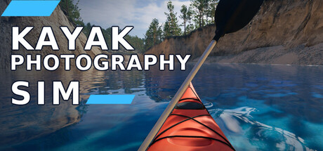

Pick your language — this is exactly how the Steam page will read. Anything that sounds off, click the + next to it and tell me.

Copy this and send it back to Hasan (Discord / WhatsApp / mail). Nothing is uploaded from this page — notes only live in your own browser.